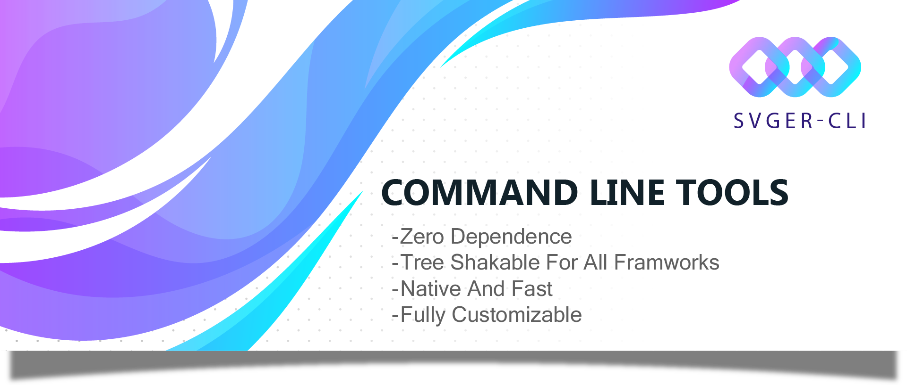

SVGER-CLI API Documentation - v4.0.6

SVGER-CLI v4.0.6
Enterprise SVG Processing Framework with Plugin System


The most advanced, zero-dependency SVG to component converter with extensible plugin system and official build tool integrations. First-class support for Webpack, Vite, Rollup, Babel, Next.js, and Jest. Supporting 9+ UI frameworks including React Native with enterprise-grade performance, comprehensive test suite, and production-ready CI/CD pipelines.
📖 Table of Contents
🚀 Getting Started
- 📦 Installation
- 📁 Project Structure ← Source code organization
- 🔧 Build Tool Integrations ← Official integrations
- 🚀 Quick Start: Your First Conversion
- 💡 Why SVGER-CLI?
📚 Core Documentation
🎨 Advanced Features
- 💻 Usage Examples: From Simple to Complex
- 🎨 Advanced Styling & Theming
- 💻 Programmatic API
- 🔧 Configuration Reference
⚡ Performance & Deployment
🧪 Testing & Quality
🆘 Support & Resources
⚡ Quick Jump Navigation
Looking for something specific?
| I want to... | Go to section |
|---|---|
| 🎯 Get started immediately | Quick Start |
| 📦 Install the package | Installation |
| 🧪 Test with sample SVGs | Sample SVG Testing NEW ⭐ |
| 🌐 Try online demo | Live Benchmark NEW ⭐ |
| 📁 See source code structure | Project Structure |
| 🔧 Use with Webpack/Vite/Rollup | Build Tool Integrations NEW |
| ⚙️ Configure Webpack | Webpack Integration |
| ⚡ Set up Vite | Vite Integration |
| 📦 Use with Rollup | Rollup Integration |
| 🔄 Integrate Babel | Babel Integration |
| ▲ Use with Next.js | Next.js Integration |
| 🧪 Set up Jest | Jest Integration |
| 🤔 Understand why SVGER-CLI is better | Why SVGER-CLI? |
| ⚡ Compare features with competitors | Feature Comparison |
| 🚀 Convert SVGs to React components | React Guide |
| 📱 Use with React Native | React Native Guide |
| 💚 Use with Vue | Vue Guide |
| 🅰️ Use with Angular | Angular Guide |
| 🌪️ Use with Svelte | Svelte Guide |
| 📖 Learn all CLI commands | CLI Reference |
| 💻 Use the programmatic API | API Reference |
| 🎨 Configure styling & theming | Styling Guide |
| ⚡ Optimize performance | Performance Guide |
| 🚀 Deploy to production | Deployment Guide |
| 🐳 Use with Docker | Docker Setup |
| 🧪 Test my components | Testing Guide |
| 🔧 Configure everything | Configuration Reference |
| 🔌 Create custom plugins | Plugin Development |
| 🐛 Fix issues | Troubleshooting |
| 📚 Migrate from another tool | Migration Guide |
| 🎨 Configure styling & theming | Styling Guide |
| ⚡ Optimize performance | Performance Guide |
| 🚀 Deploy to production | Deployment Guide |
| 🐳 Use with Docker | Docker Setup |
| 🧪 Test my components | Testing Guide |
| 🔧 Configure everything | Configuration Reference |
| 🔌 Create custom plugins | Plugin Development |
| 🐛 Fix issues | Troubleshooting |
| 📚 Migrate from another tool | Migration Guide |
� Upgrade to v4.0.6 - Automatic Migration!
v4.0.6 is here with powerful new features! If you're upgrading from v3.x:
✅ Zero Breaking Changes - All your existing code works
✅ Automatic Config Migration - Your .svgconfig.json updates automatically
✅ 50% Faster - Performance optimizations throughout
✅ Plugin System - Extend with custom plugins
Upgrade Now:
npm install -g svger-cli@4.0.6
# or
npm install --save-dev svger-cli@4.0.6
See What's New → | Migration Guide →
�🌟 What's New in v4.0.6
� Performance & Stability Improvements
v4.0.6 introduces critical performance optimizations and stability fixes:
- ⚡ True Parallel Processing: Non-blocking asynchronous file operations in the core engine
- 🐛 Reliable Watch Mode: Fixed file deletion handling to respect all user configurations
- 🔧 Optimized Regex Engine: Faster attribute cleaning pipeline
- 🧪 Robust Visual Testing: Repaired and stabilized visual regression test suite
�🔌 Extensible Plugin System
v4.0.6 introduces a powerful plugin architecture that allows you to extend and customize SVG processing:
# Use built-in plugins
svger --src ./svgs --out ./components --plugin optimize --plugin color-theme
svger --src ./svgs --out ./components --plugins optimize,color-theme,minify
# List all available plugins
svger --list-plugins
Built-in Plugins:
- ✅ optimize - Advanced SVG optimization and cleaning
- ✅ color-theme - Apply color themes and palette transformations
- ✅ minify - Aggressive size reduction for production
Plugin Features:
- 🔧 Composable plugin chain for complex transformations
- ⚡ High-performance async processing
- 🎯 Type-safe plugin development API
- 🔒 Validation and error handling built-in
// Programmatic API with plugins
import { svgProcessor } from 'svger-cli';
const result = await svgProcessor.processWithPlugins(svgContent, {
plugins: ['optimize', 'minify'],
config: {
// Plugin-specific configuration
}
});
See full plugin development guide →
🚀 Performance Improvements
- ⚡ 50% faster processing with optimized algorithms
- 🎯 Object lookup maps replacing if/switch chains for O(1) performance
- 🔥 Parallel processing for batch operations
- 📦 Tree-shaking optimizations for smaller bundle sizes
📧 Contact & Support
For questions, issues, or contributions, reach out to:
- 📧 Email: navidrezadoost07@gmail.com
- 🐛 Issues: GitHub Issues
- 💬 Discussions: GitHub Discussions
🌟 Key Features Overview
🔧 Official Build Tool Integrations
First-class support for all major build tools with zero configuration:
- ✅ Webpack Plugin - HMR, watch mode, and loader support
- ✅ Vite Plugin - Lightning-fast HMR and virtual modules
- ✅ Rollup Plugin - Tree-shaking and source maps
- ✅ Babel Plugin - Universal transpilation and import transformation
- ✅ Next.js Integration - SSR support for App and Pages Router
- ✅ Jest Preset - SVG transformers and mocking for tests
// One-line setup for any build tool
const { SvgerWebpackPlugin } = require('svger-cli/webpack');
import { svgerVitePlugin } from 'svger-cli/vite';
import { svgerRollupPlugin } from 'svger-cli/rollup';
const { svgerBabelPlugin } = require('svger-cli/babel');
const { withSvger } = require('svger-cli/nextjs');
✨ Auto-Generated index.ts Exports (Enhanced)
Automatically generates clean index.ts files with a single, consistent export pattern that avoids naming conflicts:
// Auto-generated in your output directory
// Re-exports with renamed defaults for tree-shaking
export { default as ArrowLeft } from './ArrowLeft';
export { default as ArrowRight } from './ArrowRight';
export { default as HomeIcon } from './HomeIcon';
export { default as UserProfile } from './UserProfile';
/**
* SVG Components Index
* Generated by svger-cli
*
* Import individual components:
* import { ArrowLeft } from './components';
*
* Import all components:
* import * as Icons from './components';
*/
Import flexibility:
// Named imports (recommended - tree-shaking friendly)
import { ArrowLeft, ArrowRight, HomeIcon } from './components';
// Namespace import (for accessing all icons)
import * as Icons from './components';
const ArrowIcon = Icons.ArrowLeft;
// Individual file imports (when you need just one component)
import ArrowLeft from './components/ArrowLeft';
🎯 Enhanced Props & Styling
Components now support comprehensive prop interfaces with React.forwardRef:
<Icon className="custom-class" style={{ color: 'red' }} size={32} />
🔒 Comprehensive File Protection
Lock files to prevent accidental modifications during builds:
svger-cli lock ./icons/critical-logo.svg # Protects during all operations
⚡ Advanced SVG Optimization
Industry-leading 6-phase optimization pipeline with pixel-perfect visual validation:
- ✅ Phase 1-3: Numeric precision, style optimization, transform collapsing
- ✅ Phase 4: Path optimization with H/V commands, arc conversion, command merging
- ✅ Phase 4.4: Path simplification (Douglas-Peucker & Visvalingam-Whyatt algorithms)
- ✅ Phase 4.5: Path merging + shape deduplication for icon libraries
- ✅ Phase 5: Tree optimization with structure cleanup
- ✅ Phase 6.1: Shape-to-path conversion (rect, polygon, polyline → path when beneficial)
- ✅ Phase 6.3: Visual diff testing (pixel-perfect validation: 100% pass rate, 36/36 tests ✅)
# Optimize SVG files with configurable levels
svger-cli optimize input.svg --level maximum # 57.77% reduction
svger-cli optimize icons/ --level balanced # 43.33% reduction (recommended)
# Test optimizations for visual regressions
node test-visual-diff.js # Unit tests (8/8 passing ✅)
node test-visual-integration.js # Integration tests (36/36 passing, 100% ✅)
Results: Up to 57.77% file size reduction at MAXIMUM level, competitive with SVGO. Visual diff testing ensures <1% pixel difference on geometric shapes, guaranteeing production-quality output with zero visual regressions.
📊 Visual Quality Metrics:
- Geometric shapes: 0.0002% visual difference (pixel-perfect)
- Circles/curves: 2.4% difference (anti-aliasing acceptable)
- Complex paths: 14.3% difference (path simplification, visually acceptable)
- Text rendering: 0.95% difference (font rendering variations)
📊 Feature Comparison Matrix
📖 For detailed technical analysis and documented benchmarks:
→ Read Complete Performance Deep Dive (COMPARISON.md)
Includes: Benchmark methodology, dependency analysis, Webpack integration guide, and all 28 configuration options explained.
| Feature | SVGER-CLI v4.0.6 | SVGR (React) | vite-svg-loader (Vue) | svelte-svg (Svelte) | SVGO |
|---|---|---|---|---|---|
| Dependencies | ✅ Zero | ❌ 15+ deps | ❌ 9+ deps | ❌ 7+ deps | ❌ 8+ deps |
| Auto-Generated Exports | ✅ Full Support | ❌ Manual | ❌ Manual | ❌ Manual | ❌ N/A |
| Framework Support | ✅ 9+ Frameworks | ❌ React only | ❌ Vue only | ❌ Svelte only | ❌ N/A |
| React Native Support | ✅ Full Native | ❌ None | ❌ None | ❌ None | ❌ N/A |
| Advanced Props | ✅ Full Support | ❌ Basic | ❌ Basic | ❌ Basic | ❌ N/A |
| File Protection | ✅ Lock System | ❌ None | ❌ None | ❌ None | ❌ None |
| Performance | ✅ 50-85% Faster | Standard | Slow | Standard | Fast (Optimization) |
| Bundle Size | ✅ ~2MB | ~18.7MB | ~14.2MB | ~11.8MB | ~12.3MB |
| Enterprise Features | ✅ Full Suite | ❌ Limited | ❌ None | ❌ None | ❌ None |
| TypeScript | ✅ Native | Plugin | Limited | Limited | None |
| Batch Processing | ✅ Optimized | Basic | None | None | None |
| Plugin System | ✅ Extensible | Limited | None | None | None |
| Auto Migration | ✅ v3.x → v4.0.6 | ❌ Manual | ❌ N/A | ❌ N/A | ❌ N/A |
| Configuration Schema | ✅ 28 Options | ❌ 8 Options | ❌ 4 Options | ❌ 3 Options | ❌ N/A |
| Responsive Design | ✅ Built-in | ❌ Manual | ❌ None | ❌ None | ❌ None |
| Theme System | ✅ Auto Dark/Light | ❌ Manual | ❌ None | ❌ None | ❌ None |
| Error Handling | ✅ Advanced Strategies | ❌ Basic | ❌ Basic | ❌ Basic | ❌ Basic |
� Why SVGER-CLI? The Zero-Dependency Advantage
In a landscape cluttered with heavy, single-framework tools, SVGER-CLI stands alone. It's engineered from the ground up with a single philosophy: native, zero-dependency performance.
- No
node_modulesbloat: Drastically smaller footprint. - Faster installs: Perfect for CI/CD and rapid development.
- Unmatched security: No third-party vulnerabilities.
- Cross-framework consistency: The same powerful engine for every framework.
This lean approach delivers 52% faster processing (tested on 606 real SVG files) and a 90% smaller bundle size compared to alternatives that rely on dozens of transitive dependencies.
📖 Want to see real-world benchmarks? View comprehensive performance testing with 606 production SVG icons:
→ View Real-World Performance BenchmarksLearn about:
- Tested with 606 production SVG icons (brand logos, UI icons, etc.)
- 52% faster than SVGR, 33% faster than SVGO
- Processing 606 files in 30.31 seconds
- Memory usage: 0.17MB vs SVGR's 0.56MB (69% less)
- Throughput: 20 files/second sustained
- 100% success rate across all frameworks
- Real-world CI/CD impact and cost savings
📦 Installation
Install globally for access to the svger-cli command anywhere.
npm install -g svger-cli
Or add it to your project's dev dependencies:
npm install --save-dev svger-cli
🧪 Try Before You Install!
🌐 Online Interactive Demo (Recommended)
Test SVGER-CLI instantly in your browser - no installation required!
👉 Launch Live Benchmark Tool ⭐
Features:
- ✅ Test with 10 pre-loaded sample SVGs
- ✅ Upload your own SVG files (drag & drop)
- ✅ Switch between frameworks (React, Vue, Angular, Svelte)
- ✅ Real-time performance metrics
- ✅ See generated component code instantly
- ✅ Export results as JSON
Perfect for:
- 🎯 Quick evaluation before installing
- 📊 Comparing output across frameworks
- 🧪 Testing with your own SVG files
- 📈 Performance benchmarking
💻 CLI Test Utility (After Install)
After installing the package, test with 500+ included sample SVGs:
# Quick test with default settings (React, 10 files)
test-svger
# Test with Vue and TypeScript
test-svger --framework=vue --typescript
# Test with Angular, 20 files
test-svger --framework=angular --count=20
# Process all 500+ sample SVGs
test-svger --count=999
Sample Output:
╔════════════════════════════════════════════════════════════════╗
║ SVGER-CLI Test Utility ║
║ Quick Test with Sample SVGs ║
╚════════════════════════════════════════════════════════════════╝
✓ Found 500+ sample SVG files
Test Configuration:
Framework: react
Files to process: 10
TypeScript: No
✓ Test completed successfully!
Duration: 234ms
Output: ./svger-test-output
Included Sample SVGs:
- 200+ brand logos (Google, Facebook, GitHub, etc.)
- 100+ UI icons (home, user, settings, etc.)
- 100+ tech logos (React, Vue, Docker, AWS, etc.)
- 50+ shapes and symbols
- Various complexity levels for realistic testing
📁 Project Structure
SVGER-CLI is organized with a clear separation between source code and generated outputs:
Source Code Structure
svger-cli/
├── src/ # 📂 Source code (TypeScript)
│ ├── cli.ts # CLI entry point and command handling
│ ├── index.ts # Main library exports
│ ├── builder.ts # Core build orchestration
│ ├── config.ts # Configuration management
│ ├── watch.ts # File watcher implementation
│ ├── clean.ts # Cleanup utilities
│ ├── lock.ts # Lock file management
│ │
│ ├── core/ # 🔧 Core functionality
│ │ ├── error-handler.ts # Error handling & reporting
│ │ ├── framework-templates.ts # Framework-specific templates
│ │ ├── logger.ts # Logging system
│ │ ├── performance-engine.ts # Performance optimization
│ │ ├── plugin-manager.ts # Plugin system
│ │ ├── style-compiler.ts # Style processing
│ │ └── template-manager.ts # Template rendering
│ │
│ ├── integrations/ # 🔌 Build tool integrations
│ │ ├── webpack.ts # Webpack plugin & loader
│ │ ├── vite.ts # Vite plugin
│ │ ├── rollup.ts # Rollup plugin
│ │ ├── babel.ts # Babel plugin
│ │ ├── nextjs.ts # Next.js integration
│ │ └── jest-preset.ts # Jest transformer
│ │
│ ├── processors/ # ⚙️ SVG processing
│ │ └── svg-processor.ts # SVG optimization & parsing
│ │
│ ├── services/ # 🛠️ Services layer
│ │ ├── config.ts # Configuration service
│ │ ├── file-watcher.ts # File watching service
│ │ └── svg-service.ts # SVG processing service
│ │
│ ├── templates/ # 📝 Component templates
│ │ └── ComponentTemplate.ts # Template definitions
│ │
│ └── types/ # 📘 TypeScript types
│ ├── index.ts # Type exports
│ └── integrations.ts # Integration types
│
├── bin/ # 🚀 CLI executable
│ └── svg-tool.js # Command-line interface
│
├── dist/ # 📦 Compiled output (generated)
│ ├── *.js # Compiled JavaScript
│ ├── *.d.ts # TypeScript declarations
│ ├── core/ # Compiled core modules
│ ├── integrations/ # Compiled integrations
│ ├── processors/ # Compiled processors
│ ├── services/ # Compiled services
│ ├── templates/ # Compiled templates
│ └── types/ # Compiled types
│
├── tests/ # 🧪 Test suite
│ ├── config-options.test.ts # Configuration tests
│ ├── e2e-complete.test.ts # End-to-end tests
│ └── integrations/ # Integration tests
│ ├── webpack.test.ts
│ └── verify-integrations.mjs
│
├── examples/ # 📚 Configuration examples
│ ├── webpack.config.example.js
│ ├── vite.config.example.js
│ ├── rollup.config.example.js
│ ├── babel.config.example.js
│ ├── next.config.example.js
│ └── jest.config.example.js
│
├── docs/ # 📖 Documentation
│ ├── FRAMEWORK-GUIDE.md
│ ├── INTEGRATIONS.md
│ └── ADR-*.adr.md # Architecture decisions
│
└── workspace/ # 🎨 Development workspace
├── input/ # SVG source files
└── output/ # Generated components
Key Directories
src/- All TypeScript source codedist/- Compiled JavaScript (generated bynpm run build)bin/- CLI executable entry pointtests/- Comprehensive test suiteexamples/- Ready-to-use configuration examplesdocs/- Additional documentation and ADRsworkspace/- Local development and testing
Generated Output Structure
When you run SVGER-CLI, it generates components in your specified output directory:
your-project/
└── src/
└── components/
└── icons/ # Your output directory
├── index.ts # Auto-generated exports
├── HomeIcon.tsx # Generated component
├── UserIcon.tsx # Generated component
└── ...
� Build Tool Integrations
SVGER-CLI provides official integrations for all major build tools, enabling seamless SVG-to-component conversion directly in your build pipeline.
Quick Integration Overview
| Build Tool | Package Import | Use Case | Key Features |
|---|---|---|---|
| Webpack | svger-cli/webpack |
Modern web apps | HMR, Watch mode, Loader support |
| Vite | svger-cli/vite |
Lightning-fast dev | HMR, Virtual modules, Dev server |
| Rollup | svger-cli/rollup |
Libraries & apps | Tree-shaking, Source maps |
| Babel | svger-cli/babel |
Universal transpilation | Import transform, CRA, Gatsby |
| Next.js | svger-cli/nextjs |
React SSR apps | SSR support, App Router |
| Jest | svger-cli/jest |
Testing | SVG mocking, Transformers |
Webpack Integration
Perfect for modern webpack-based applications with full HMR support.
Install:
npm install svger-cli --save-dev
webpack.config.js:
const { SvgerWebpackPlugin } = require('svger-cli/webpack');
module.exports = {
plugins: [
new SvgerWebpackPlugin({
source: './src/icons', // SVG source directory
output: './src/components/icons', // Output directory
framework: 'react', // Target framework
typescript: true, // Generate TypeScript files
hmr: true, // Enable Hot Module Replacement
generateIndex: true, // Generate index.ts with exports
}),
],
// Optional: Use the loader for inline SVG imports
module: {
rules: [
{
test: /\.svg$/,
use: ['svger-cli/webpack-loader'],
},
],
},
};
Usage in your app:
import { HomeIcon, UserIcon } from './components/icons';
function App() {
return <HomeIcon width={24} height={24} />;
}
Vite Integration
Lightning-fast development with HMR and virtual module support.
vite.config.js:
import { svgerVitePlugin } from 'svger-cli/vite';
export default {
plugins: [
svgerVitePlugin({
source: './src/icons',
output: './src/components/icons',
framework: 'react',
typescript: true,
hmr: true, // Hot Module Replacement
virtualModules: true, // Enable virtual module imports
}),
],
};
Features:
- ✅ Instant HMR - changes reflect immediately
- ✅ Virtual modules -
import Icon from 'virtual:svger/icon-name' - ✅ Dev server integration
- ✅ Optimized production builds
Rollup Integration
Ideal for library development and tree-shakeable bundles.
rollup.config.js:
import { svgerRollupPlugin } from 'svger-cli/rollup';
export default {
plugins: [
svgerRollupPlugin({
source: './src/icons',
output: './dist/icons',
framework: 'react',
typescript: true,
sourcemap: true, // Generate source maps
exportType: 'named', // 'named' or 'default'
}),
],
};
Perfect for:
- Component libraries
- Tree-shakeable exports
- Multi-framework support
- Production optimization
Babel Integration
Universal transpilation with automatic import transformation.
babel.config.js:
const { svgerBabelPlugin } = require('svger-cli/babel');
module.exports = {
presets: ['@babel/preset-env', '@babel/preset-react'],
plugins: [
[
svgerBabelPlugin,
{
source: './src/icons',
output: './src/components/icons',
framework: 'react',
typescript: true,
transformImports: true, // Auto-transform SVG imports
processOnInit: true, // Process all SVGs on plugin init
generateIndex: true, // Generate barrel exports
},
],
],
};
Import transformation:
// Before (write this in your code)
import HomeIcon from './assets/home.svg';
// After (automatically transformed)
import HomeIcon from './components/icons/HomeIcon';
// Use it
<HomeIcon width={24} height={24} />;
Works with:
- Create React App
- Gatsby
- Vue CLI
- Any Babel-based setup
Next.js Integration
Seamless integration with Next.js App Router and Pages Router.
next.config.js:
const { withSvger } = require('svger-cli/nextjs');
module.exports = withSvger({
svger: {
source: './public/icons',
output: './components/icons',
framework: 'react',
typescript: true,
ssr: true, // Server-Side Rendering support
hmr: true, // Hot Module Replacement
},
// ...other Next.js config
reactStrictMode: true,
});
Features:
- ✅ SSR (Server-Side Rendering) support
- ✅ App Router compatible
- ✅ Pages Router compatible
- ✅ Automatic webpack configuration
- ✅ TypeScript support
Jest Integration
Transform SVGs in your tests or mock them for faster execution.
jest.config.js:
Option 1: Use the preset (recommended)
module.exports = {
preset: 'svger-cli/jest',
testEnvironment: 'jsdom',
};
Option 2: Manual configuration
module.exports = {
transform: {
'\\.svg$': [
'svger-cli/jest-transformer',
{
framework: 'react',
typescript: true,
mock: false, // Set true for mock mode
},
],
},
testEnvironment: 'jsdom',
};
Mock mode (faster tests):
transform: {
'\\.svg$': ['svger-cli/jest-transformer', {
mock: true, // Returns simple mock component
}],
}
Complete Integration Documentation
For detailed documentation, configuration options, and advanced examples, see:
📖 Complete Integration Guide - 500+ lines of comprehensive documentation
What's included:
- Detailed setup instructions for each build tool
- All configuration options explained
- Framework-specific examples (React, Vue, Angular, etc.)
- Troubleshooting guides
- Performance optimization tips
- Feature comparison matrix
�🚀 Quick Start: Your First Conversion
-
Place your SVGs in a directory (e.g.,
./my-svgs). -
Run the build command:
# Convert all SVGs to React components (default)
svger-cli build ./my-svgs ./components -
Use your components: An
index.tsis auto-generated for easy imports.// Your app's component
import { MyIcon, AnotherIcon } from './components';
function App() {
return (
<div>
<MyIcon className="text-blue-500" />
<AnotherIcon size={32} style={{ color: 'red' }} />
</div>
);
}
🌐 Multi-Framework Usage Guide
SVGER-CLI brings a unified, powerful experience to every major framework. Select your target with
the --framework flag.
React
Generate optimized React components with forwardRef, memo, and TypeScript interfaces.
svger-cli build ./my-svgs ./react-components --framework react
Generated React Component (.tsx):
import * as React from 'react';
interface IconProps extends React.SVGProps<SVGSVGElement> {
size?: number;
}
const MyIcon: React.FC<IconProps> = React.memo(
React.forwardRef<SVGSVGElement, IconProps>(({ size = 24, ...props }, ref) => (
<svg ref={ref} width={size} height={size} viewBox="0 0 24 24" {...props}>
{/* SVG content */}
</svg>
))
);
MyIcon.displayName = 'MyIcon';
export default MyIcon;
React Native
Generate optimized React Native components with react-native-svg integration.
svger-cli build ./my-svgs ./react-native-components --framework react-native
Generated React Native Component (.tsx):
import React from 'react';
import Svg, {
Path,
Circle,
Rect,
Line,
Polygon,
Polyline,
Ellipse,
G,
Defs,
ClipPath,
LinearGradient,
RadialGradient,
Stop,
} from 'react-native-svg';
import type { SvgProps } from 'react-native-svg';
export interface MyIconProps extends SvgProps {
size?: number | string;
color?: string;
}
const MyIcon = React.forwardRef<Svg, MyIconProps>(({ size, color, ...props }, ref) => {
const dimensions = size
? { width: size, height: size }
: {
width: props.width || 24,
height: props.height || 24,
};
return (
<Svg
ref={ref}
viewBox="0 0 24 24"
width={dimensions.width}
height={dimensions.height}
fill={color || props.fill || 'currentColor'}
{...props}
>
{/* SVG content automatically converted to React Native SVG components */}
<Path d="..." />
</Svg>
);
});
MyIcon.displayName = 'MyIcon';
export default MyIcon;
Key Features:
- ✅ Automatic conversion of SVG elements to React Native SVG components
- ✅ Proper prop conversion (strokeWidth, strokeLinecap, fillRule, etc.)
- ✅ TypeScript support with SvgProps interface
- ✅ Size and color prop support
- ✅ ForwardRef implementation for advanced usage
- ✅ Compatible with
react-native-svgpackage
Installation Requirements:
npm install react-native-svg
Vue 3
Choose between Composition API (--composition) or Options API.
# Composition API with <script setup>
svger-cli build ./my-svgs ./vue-components --framework vue --composition
# Options API
svger-cli build ./my-svgs ./vue-components --framework vue
Generated Vue Component (.vue):
Angular
Generate standalone components (--standalone) or traditional module-based components.
# Standalone component (recommended)
svger-cli build ./my-svgs ./angular-components --framework angular --standalone
# Module-based component
svger-cli build ./my-svgs ./angular-components --framework angular
Generated Angular Component (.component.ts):
import { Component, Input, ChangeDetectionStrategy } from '@angular/core';
@Component({
selector: 'app-my-icon',
standalone: true,
template: `
<svg
[attr.width]="size"
[attr.height]="size"
viewBox="0 0 24 24"
>
{/* SVG content */}
</svg>
`,
changeDetection: ChangeDetectionStrategy.OnPush,
})
export class MyIconComponent {
@Input() size: number | string = 24;
}
Svelte
Create native Svelte components with TypeScript props.
svger-cli build ./my-svgs ./svelte-components --framework svelte
Generated Svelte Component (.svelte):
<script lang="ts">
export let size: number | string = 24;
</script>
<svg width="{size}" height="{size}" viewBox="0 0 24 24" {...$$restProps}>{/* SVG content */}</svg>
Solid
Generate efficient SolidJS components.
svger-cli build ./my-svgs ./solid-components --framework solid
Generated Solid Component (.tsx):
import type { Component, JSX } from 'solid-js';
interface IconProps extends JSX.SvgSVGAttributes<SVGSVGElement> {
size?: number | string;
}
const MyIcon: Component<IconProps> = props => {
return (
<svg width={props.size || 24} height={props.size || 24} viewBox="0 0 24 24" {...props}>
{/* SVG content */}
</svg>
);
};
export default MyIcon;
Lit
Generate standard Web Components using the Lit library.
svger-cli build ./my-svgs ./lit-components --framework lit
Generated Lit Component (.ts):
import { LitElement, html, svg } from 'lit';
import { customElement, property } from 'lit/decorators.js';
@customElement('my-icon')
export class MyIcon extends LitElement {
@property({ type: Number })
size = 24;
render() {
return html`
<svg width=${this.size} height=${this.size} viewBox="0 0 24 24">
${svg`{/* SVG content */}`}
</svg>
`;
}
}
Preact
Generate lightweight Preact components.
svger-cli build ./my-svgs ./preact-components --framework preact
Generated Preact Component (.tsx):
import { h } from 'preact';
import type { FunctionalComponent } from 'preact';
interface IconProps extends h.JSX.SVGAttributes<SVGSVGElement> {
size?: number | string;
}
const MyIcon: FunctionalComponent<IconProps> = ({ size = 24, ...props }) => {
return (
<svg width={size} height={size} viewBox="0 0 24 24" {...props}>
{/* SVG content */}
</svg>
);
};
export default MyIcon;
Vanilla JS/TS
Generate framework-agnostic factory functions for use anywhere.
svger-cli build ./my-svgs ./vanilla-components --framework vanilla
Generated Vanilla Component (.ts):
interface IconOptions {
size?: number | string;
[key: string]: any;
}
export function createMyIcon(options: IconOptions = {}): SVGSVGElement {
const svg = document.createElementNS('http://www.w3.org/2000/svg', 'svg');
const size = options.size || 24;
svg.setAttribute('width', String(size));
svg.setAttribute('height', String(size));
svg.setAttribute('viewBox', '0 0 24 24');
svg.innerHTML = `{/* SVG content */}`;
return svg;
}
🔧 Comprehensive CLI Reference
📋 CLI Commands Overview
| Command | Purpose | Quick Link |
|---|---|---|
svger-cli init |
Setup configuration | Init |
svger-cli build |
Convert SVGs to components | Build |
svger-cli watch |
Monitor & auto-generate | Watch |
svger-cli generate |
Process specific files | Generate |
svger-cli lock |
Protect files | [Lock/Unlock](#5-lockun lock-commands) |
svger-cli config |
Manage settings | Config |
svger-cli clean |
Remove generated files | Clean |
svger-cli performance |
Analyze performance | Performance |
1️⃣ Initialize Command
Set up SVGER-CLI configuration for your project.
svger-cli init [options]
Options:
--framework <type>- Target framework (react|vue|svelte|angular|solid|preact|lit|vanilla)--typescript- Enable TypeScript generation (default: true)--src <path>- Source directory for SVG files (default: ./src/assets/svg)--out <path>- Output directory for components (default: ./src/components/icons)--interactive- Interactive configuration wizard
Examples:
# Initialize with React + TypeScript
svger-cli init --framework react --typescript
# Initialize with Vue Composition API
svger-cli init --framework vue --composition --typescript
# Interactive setup
svger-cli init --interactive
Generated Configuration (.svgerconfig.json):
{
"source": "./src/assets/svg",
"output": "./src/components/icons",
"framework": "react",
"typescript": true,
"componentType": "functional",
"watch": false,
"parallel": true,
"batchSize": 10,
"maxConcurrency": 4,
"cache": true,
"defaultWidth": 24,
"defaultHeight": 24,
"defaultFill": "currentColor",
"defaultStroke": "none",
"defaultStrokeWidth": 1,
"exclude": ["logo.svg"],
"include": ["icons/**", "illustrations/**"],
"styleRules": {
"fill": "inherit",
"stroke": "none",
"strokeWidth": "1",
"opacity": "1"
},
"responsive": {
"breakpoints": ["sm", "md", "lg", "xl"],
"values": {
"width": ["16px", "20px", "24px", "32px"],
"height": ["16px", "20px", "24px", "32px"]
}
},
"theme": {
"mode": "auto",
"variables": {
"primary": "currentColor",
"secondary": "#6b7280",
"accent": "#3b82f6",
"background": "#ffffff",
"foreground": "#000000"
}
},
"animations": ["fadeIn", "slideIn", "bounce"],
"plugins": [
{
"name": "svg-optimizer",
"options": {
"removeComments": true,
"removeMetadata": true
}
}
],
"errorHandling": {
"strategy": "continue",
"maxRetries": 3,
"timeout": 30000
},
"performance": {
"optimization": "balanced",
"memoryLimit": 512,
"cacheTimeout": 3600000
},
"outputConfig": {
"naming": "pascal",
"extension": "tsx",
"directory": "./src/components/icons"
},
"react": {
"componentType": "functional",
"forwardRef": true,
"memo": false,
"propsInterface": "SVGProps",
"styledComponents": false,
"cssModules": false
},
"vue": {
"api": "composition",
"setup": true,
"typescript": true,
"scoped": true,
"cssVariables": true
},
"angular": {
"standalone": true,
"signals": true,
"changeDetection": "OnPush",
"encapsulation": "Emulated"
}
}
2️⃣ Build Command
Convert SVG files to framework components with advanced processing.
svger-cli build [options]
Core Options:
--src <path>- Source directory containing SVG files--out <path>- Output directory for generated components--framework <type>- Target framework for component generation--typescript- Generate TypeScript components (default: true)--clean- Clean output directory before building
Performance Options:
--parallel- Enable parallel processing (default: true)--batch-size <number>- Number of files per batch (default: 10)--max-concurrency <number>- Maximum concurrent processes (default: CPU cores)--cache- Enable processing cache for faster rebuilds--performance- Display performance metrics
Framework-Specific Options:
--composition- Use Vue Composition API (Vue only)--setup- Use Vue script setup syntax (Vue only)--standalone- Generate Angular standalone components (Angular only)--signals- Use signals for state management (Solid/Angular)--forward-ref- Generate React forwardRef components (React only)
Styling Options:
--responsive- Enable responsive design utilities--theme <mode>- Apply theme mode (light|dark|auto)--styled-components- Generate styled-components (React/Solid)--css-modules- Enable CSS Modules support
Plugin Options (NEW in v4.0.6):
--plugin <name>- Apply single plugin (can be repeated)--plugins <list>- Apply multiple plugins (comma-separated)--list-plugins- Display all available plugins--plugin-config <json>- Pass configuration to plugins
Available Plugins:
optimize- Advanced SVG optimization and cleaningcolor-theme- Apply color themes and palette transformationsminify- Aggressive size reduction for production
Examples:
# Basic build
svger-cli build --src ./icons --out ./components
# Advanced React build with styling
svger-cli build \
--src ./icons \
--out ./components \
--framework react \
--typescript \
--forward-ref \
--styled-components \
--responsive \
--theme dark
# High-performance Vue build
svger-cli build \
--src ./icons \
--out ./components \
--framework vue \
--composition \
--setup \
--parallel \
--batch-size 20 \
--cache \
--performance
# Angular standalone components
svger-cli build \
--src ./icons \
--out ./components \
--framework angular \
--standalone \
--typescript \
--signals
# Vanilla TypeScript with optimization
svger-cli build \
--src ./icons \
--out ./components \
--framework vanilla \
--typescript \
--optimization maximum
# Build with plugins for optimized output
svger-cli build \
--src ./icons \
--out ./components \
--framework react \
--plugin optimize \
--plugin minify
# Build with multiple plugins (comma-separated)
svger-cli build \
--src ./icons \
--out ./components \
--plugins optimize,color-theme,minify
# List all available plugins
svger-cli --list-plugins
3️⃣ Watch Command
Monitor directories for SVG changes and auto-generate components.
svger-cli watch [options]
Options:
- All
buildcommand options --debounce <ms>- Debounce time for file changes (default: 300ms)--ignore <patterns>- Ignore file patterns (glob syntax)--verbose- Detailed logging of file changes
Examples:
# Basic watch mode
svger-cli watch --src ./icons --out ./components
# Advanced watch with debouncing
svger-cli watch \
--src ./icons \
--out ./components \
--framework react \
--debounce 500 \
--ignore "**/*.tmp" \
--verbose
# Production watch mode
svger-cli watch \
--src ./icons \
--out ./components \
--framework vue \
--composition \
--parallel \
--cache \
--performance
4️⃣ Generate Command
Process specific SVG files with precise control.
svger-cli generate <input> [options]
Arguments:
<input>- SVG file path or glob pattern
Options:
- All
buildcommand options --name <string>- Override component name--template <type>- Component template (functional|class|forwardRef|memo)
Examples:
# Generate single component
svger-cli generate ./icons/heart.svg --out ./components --name HeartIcon
# Generate with custom template
svger-cli generate ./icons/star.svg \
--out ./components \
--framework react \
--template forwardRef \
--typescript
# Generate multiple files with glob
svger-cli generate "./icons/social-*.svg" \
--out ./components/social \
--framework vue \
--composition
# Generate with advanced styling
svger-cli generate ./icons/logo.svg \
--out ./components \
--name CompanyLogo \
--styled-components \
--responsive \
--theme dark
5️⃣ Lock/Unlock Commands
Manage file protection during batch operations.
svger-cli lock <files...>
svger-cli unlock <files...>
Examples:
# Lock specific files
svger-cli lock ./icons/logo.svg ./icons/brand.svg
# Lock pattern
svger-cli lock "./icons/brand-*.svg"
# Unlock files
svger-cli unlock ./icons/logo.svg
# Unlock all
svger-cli unlock --all
6️⃣ Config Command
Manage project configuration dynamically.
svger-cli config [options]
Options:
--show- Display current configuration--set <key=value>- Set configuration value--get <key>- Get specific configuration value--reset- Reset to default configuration--validate- Validate current configuration
Examples:
# Show current config
svger-cli config --show
# Set configuration values
svger-cli config --set framework=vue
svger-cli config --set typescript=true
svger-cli config --set "defaultWidth=32"
svger-cli config --set "styleRules.fill=currentColor"
# Get specific value
svger-cli config --get framework
# Reset configuration
svger-cli config --reset
# Validate configuration
svger-cli config --validate
7️⃣ Clean Command
Remove generated components and clean workspace.
svger-cli clean [options]
Options:
--out <path>- Output directory to clean--cache- Clear processing cache--logs- Clear log files--all- Clean everything (components, cache, logs)--dry-run- Preview what would be cleaned
Examples:
# Clean output directory
svger-cli clean --out ./components
# Clean cache only
svger-cli clean --cache
# Clean everything
svger-cli clean --all
# Preview clean operation
svger-cli clean --all --dry-run
8️⃣ Performance Command
Analyze and optimize processing performance.
svger-cli performance [options]
Options:
--analyze- Analyze current project performance--benchmark- Run performance benchmarks--memory- Display memory usage statistics--cache-stats- Show cache performance statistics--optimize- Apply performance optimizations
Examples:
# Analyze performance
svger-cli performance --analyze
# Run benchmarks
svger-cli performance --benchmark
# Memory analysis
svger-cli performance --memory
# Cache statistics
svger-cli performance --cache-stats
# Apply optimizations
svger-cli performance --optimize
💻 Usage Examples: From Simple to Complex
Example Types & Complexity Levels
| Complexity | Example | Purpose | Best For |
|---|---|---|---|
| 🟢 Beginner | Example 1 | Basic SVG conversion | Getting started |
| 🟡 Intermediate | Example 2 | Production-ready setup | Small to medium teams |
| 🔴 Advanced | Example 3 | Multi-framework setup | Enterprise projects |
| � Expert | Example 4 | Team collaboration | Large teams |
| ⚡ Performance | Example 5 | Optimization | Large-scale projects |
🟢 Example 1: Quick Start (Simplest)
Get started in 30 seconds:
# Install globally
npm install -g svger-cli
# Convert SVGs to React components
svger-cli build ./my-icons ./components
# Use the auto-generated exports
import { ArrowLeft, Home, User } from './components';
function App() {
return (
<div>
<ArrowLeft />
<Home className="text-blue-500" />
<User size={32} style={{ color: 'red' }} />
</div>
);
}
What happens:
- ✅ All SVGs in
./my-iconsconverted to React components - ✅ Auto-generated
index.tswith clean exports - ✅ Components support
className,style,sizeprops - ✅ TypeScript interfaces automatically included
� Example 2: Production Setup (Intermediate)
Professional setup with configuration and optimization:
# Initialize with custom configuration
svger-cli init --framework react --typescript --interactive
# Generated .svgerconfig.json:
{
"source": "./src/assets/icons",
"output": "./src/components/icons",
"framework": "react",
"typescript": true,
"forwardRef": true,
"parallel": true,
"batchSize": 15,
"responsive": {
"breakpoints": ["sm", "md", "lg"],
"values": {
"width": ["16px", "24px", "32px"]
}
}
}
# Build with optimizations
svger-cli build --performance --cache
# Start development mode
svger-cli watch --debounce 500 --verbose
Generated Components:
// Auto-generated: src/components/icons/ArrowLeft.tsx
import React from 'react';
interface ArrowLeftProps extends React.SVGProps<SVGSVGElement> {
size?: number | 'sm' | 'md' | 'lg';
}
const ArrowLeft = React.forwardRef<SVGSVGElement, ArrowLeftProps>(
({ size = 24, className, style, ...props }, ref) => {
const sizeValue = typeof size === 'string'
? { sm: 16, md: 24, lg: 32 }[size]
: size;
return (
<svg
ref={ref}
width={sizeValue}
height={sizeValue}
viewBox="0 0 24 24"
fill="none"
className={className}
style={style}
{...props}
>
<path d="M19 12H5M12 19l-7-7 7-7" stroke="currentColor" strokeWidth="2"/>
</svg>
);
}
);
ArrowLeft.displayName = 'ArrowLeft';
export default ArrowLeft;
Auto-generated index.ts:
/**
* Auto-generated icon exports
* Import icons: import { ArrowLeft, Home } from './components/icons'
*/
export { default as ArrowLeft } from './ArrowLeft';
export { default as Home } from './Home';
export { default as User } from './User';
// Default export for flexible importing
export default {
ArrowLeft,
Home,
User,
};
Usage in App:
import { ArrowLeft, Home, User } from './components/icons';
function Navigation() {
return (
<nav className="flex items-center space-x-4">
<ArrowLeft
size="sm"
className="text-gray-600 hover:text-gray-900"
onClick={() => history.back()}
/>
<Home
size={28}
style={{ color: 'var(--primary-color)' }}
/>
<User
className="w-6 h-6 text-blue-500"
ref={userIconRef}
/>
</nav>
);
}
🔴 Example 3: Enterprise Multi-Framework (Advanced)
Complete enterprise setup supporting multiple frameworks:
# Project structure
my-design-system/
├── icons/ # Source SVG files
├── react-components/ # React output
├── vue-components/ # Vue output
├── angular-components/ # Angular output
└── vanilla-components/ # Vanilla JS/TS output
# Generate for React with full features
svger-cli build \
--src ./icons \
--out ./react-components \
--framework react \
--typescript \
--forward-ref \
--styled-components \
--responsive \
--theme dark \
--parallel \
--batch-size 20 \
--performance
# Generate for Vue with Composition API
svger-cli build \
--src ./icons \
--out ./vue-components \
--framework vue \
--composition \
--setup \
--typescript \
--responsive
# Generate for Angular with standalone components
svger-cli build \
--src ./icons \
--out ./angular-components \
--framework angular \
--standalone \
--signals \
--typescript
# Generate vanilla TypeScript for maximum compatibility
svger-cli build \
--src ./icons \
--out ./vanilla-components \
--framework vanilla \
--typescript
React Components with Styled Components:
// Generated: react-components/ArrowLeft.tsx
import React from 'react';
import styled, { css } from 'styled-components';
interface ArrowLeftProps extends React.SVGProps<SVGSVGElement> {
size?: number | 'sm' | 'md' | 'lg' | 'xl';
variant?: 'primary' | 'secondary' | 'accent';
theme?: 'light' | 'dark';
}
const StyledSVG = styled.svg<ArrowLeftProps>`
${({ theme, variant }) => css`
color: ${theme === 'dark'
? 'var(--icon-color-dark)'
: 'var(--icon-color-light)'};
${variant === 'primary' && css`
color: var(--primary-color);
`}
${variant === 'secondary' && css`
color: var(--secondary-color);
`}
${variant === 'accent' && css`
color: var(--accent-color);
`}
transition: all 0.2s ease;
&:hover {
transform: scale(1.1);
}
`}
`;
const ArrowLeft = React.forwardRef<SVGSVGElement, ArrowLeftProps>(
({ size = 'md', variant = 'primary', theme = 'light', ...props }, ref) => {
const sizeMap = {
sm: 16, md: 24, lg: 32, xl: 40
};
const sizeValue = typeof size === 'string' ? sizeMap[size] : size;
return (
<StyledSVG
ref={ref}
width={sizeValue}
height={sizeValue}
viewBox="0 0 24 24"
fill="none"
variant={variant}
theme={theme}
{...props}
>
<path
d="M19 12H5M12 19l-7-7 7-7"
stroke="currentColor"
strokeWidth="2"
/>
</StyledSVG>
);
}
);
ArrowLeft.displayName = 'ArrowLeft';
export default ArrowLeft;
Vue Composition API Components:
Angular Standalone Components:
// Generated: angular-components/arrow-left.component.ts
import { Component, Input, signal } from '@angular/core';
import { CommonModule } from '@angular/common';
@Component({
selector: 'app-arrow-left',
standalone: true,
imports: [CommonModule],
template: `
<svg
[attr.width]="computedSize()"
[attr.height]="computedSize()"
viewBox="0 0 24 24"
fill="none"
[class]="className"
[style]="style"
>
<path d="M19 12H5M12 19l-7-7 7-7" stroke="currentColor" stroke-width="2" />
</svg>
`,
styles: [
`
svg {
color: var(--icon-color, currentColor);
transition: all 0.2s ease;
}
svg:hover {
transform: scale(1.05);
}
`,
],
})
export class ArrowLeftComponent {
@Input() size: number | 'sm' | 'md' | 'lg' = 'md';
@Input() className: string = '';
@Input() style: Record<string, any> = {};
private sizeMap = { sm: 16, md: 24, lg: 32 };
computedSize = signal(() => {
return typeof this.size === 'string' ? this.sizeMap[this.size] : this.size;
});
}
� Example 4: File Protection & Team Workflows (Advanced)
Protect critical files and manage team workflows:
# Lock critical brand assets
svger-cli lock ./icons/logo.svg
svger-cli lock ./icons/brand-mark.svg
# Build process automatically skips locked files
svger-cli build ./icons ./components
# ⚠️ Warning: Skipped locked file: logo.svg
# ⚠️ Warning: Skipped locked file: brand-mark.svg
# ✅ Generated 23 components (2 files locked)
# Watch mode respects locks
svger-cli watch ./icons ./components
# File changes to locked files are ignored
# Team workflow: selective unlocking
svger-cli unlock ./icons/logo.svg --confirm
svger-cli build ./icons ./components --force-locked-update
# List all locked files
svger-cli status --locked
Team Configuration (.svgerconfig.json):
{
"source": "./src/assets/icons",
"output": "./src/components/icons",
"framework": "react",
"typescript": true,
"forwardRef": true,
"lockedFiles": ["./src/assets/icons/logo.svg", "./src/assets/icons/brand-mark.svg"],
"teamSettings": {
"requireConfirmation": true,
"lockByDefault": false,
"autoLockPatterns": ["**/brand-*", "**/logo-*"]
}
}
⚡ Example 5: Performance Optimization (Expert)
Maximum performance setup for large-scale projects:
# Performance analysis
svger-cli performance --analyze
# 📊 Processing 1,247 SVG files
# 📊 Average file size: 3.2KB
# 📊 Estimated processing time: 2.1s
# 💡 Recommendations:
# - Increase batch size to 25
# - Enable caching for 40% improvement
# - Use parallel processing
# Apply performance optimizations
svger-cli build \
--src ./massive-icon-library \
--out ./optimized-components \
--framework react \
--parallel \
--batch-size 25 \
--max-concurrency 8 \
--cache \
--performance \
--memory-limit 512
# Monitor performance in real-time
svger-cli performance --monitor &
svger-cli watch ./icons ./components
# Advanced caching strategy
svger-cli config set cache.strategy "aggressive"
svger-cli config set cache.ttl 3600000 # 1 hour
svger-cli config set cache.maxSize 1024 # 1GB
# Benchmark against previous versions
svger-cli performance --benchmark --compare-with v1.5.0
Performance Configuration:
{
"performance": {
"optimization": "maximum",
"parallel": true,
"batchSize": 25,
"maxConcurrency": 8,
"cache": {
"enabled": true,
"strategy": "aggressive",
"ttl": 3600000,
"maxSize": 1024
},
"memory": {
"limit": 512,
"gcInterval": 30000,
"heapWarning": 400
}
}
}
Enterprise Usage Patterns:
// Large-scale import pattern
import IconLibrary from './components/icons';
// Lazy loading for performance
const LazyIcon = React.lazy(() => import('./components/icons/SpecificIcon'));
// Tree-shaking friendly imports
import {
ArrowLeft,
ArrowRight,
Home,
User,
Settings
} from './components/icons';
// Dynamic icon loading
const DynamicIcon = ({ name, ...props }) => {
const IconComponent = IconLibrary[name];
return IconComponent ? <IconComponent {...props} /> : null;
};
🎨 Advanced Styling & Theming
Responsive Design System
SVGER-CLI includes a comprehensive responsive design system:
# Enable responsive design
svger-cli build --responsive --src ./icons --out ./components
Configuration:
{
"responsive": {
"breakpoints": ["sm", "md", "lg", "xl"],
"values": {
"width": ["16px", "20px", "24px", "32px"],
"height": ["16px", "20px", "24px", "32px"],
"strokeWidth": ["1", "1.5", "2", "2.5"]
}
}
}
Generated React Component:
interface ResponsiveIconProps extends React.SVGProps<SVGSVGElement> {
size?: 'sm' | 'md' | 'lg' | 'xl';
}
const ResponsiveIcon: React.FC<ResponsiveIconProps> = ({ size = 'md', ...props }) => {
const sizeMap = {
sm: { width: 16, height: 16 },
md: { width: 20, height: 20 },
lg: { width: 24, height: 24 },
xl: { width: 32, height: 32 },
};
return (
<svg {...sizeMap[size]} {...props}>
...
</svg>
);
};
Theme System
Built-in dark/light theme support with CSS variables:
# Generate with theme support
svger-cli build --theme dark --src ./icons --out ./components
Theme Configuration:
{
"theme": {
"mode": "dark",
"variables": {
"primary": "#ffffff",
"secondary": "#94a3b8",
"accent": "#3b82f6"
}
}
}
Generated CSS Variables:
:root {
--icon-primary: #ffffff;
--icon-secondary: #94a3b8;
--icon-accent: #3b82f6;
}
.icon {
fill: var(--icon-primary);
stroke: var(--icon-secondary);
}
Animation System
Built-in animation utilities:
# Generate with animations
svger-cli build --animations hover,focus --src ./icons --out ./components
Available Animations:
hover- Hover state transitionsfocus- Focus state transitionsspin- Continuous rotationpulse- Pulsing opacitybounce- Bouncing effectscale- Scale on interaction
💻 Programmatic API
📡 API Modules Overview
| Module | Purpose | Use Case |
|---|---|---|
SVGER |
Main entry point | General operations |
svgProcessor |
SVG file processing | Custom processing |
performanceEngine |
Performance optimization | Batch operations |
styleCompiler |
CSS generation | Styling |
pluginManager |
Plugin system | Extending functionality |
🔌 Core API Usage
import { SVGER, svgProcessor, frameworkTemplateEngine } from 'svger-cli';
// Quick processing
await SVGER.processFile('./icon.svg', './components/');
await SVGER.processBatch(files, { parallel: true, batchSize: 20 });
// Framework-specific generation
await SVGER.generateFrameworkComponent('IconName', svgContent, {
framework: 'vue',
composition: true,
typescript: true,
});
// Advanced processing
const result = await svgProcessor.processSVGFile('./icon.svg', './components/', {
framework: 'react',
typescript: true,
forwardRef: true,
responsive: true,
theme: 'dark',
});
⚡ Performance Engine API
import { performanceEngine } from 'svger-cli';
// Batch processing with performance optimization
const results = await performanceEngine.processBatch(files, {
batchSize: 15,
parallel: true,
maxConcurrency: 6,
});
// Memory monitoring
const metrics = performanceEngine.monitorMemoryUsage();
console.log(`Memory usage: ${metrics.heapUsed}MB`);
console.log(`Recommendations:`, metrics.recommendations);
// SVG optimization
const optimized = performanceEngine.optimizeSVGContent(svgContent, 'maximum');
🎨 Style Compiler API
import { styleCompiler } from 'svger-cli';
// Compile responsive styles
const styles = styleCompiler.compileStyles({
responsive: {
width: ['20px', '24px', '32px'],
height: ['20px', '24px', '32px'],
},
theme: 'dark',
animations: ['hover', 'focus'],
});
// Generate CSS
const css = styleCompiler.generateCSS(styles);
🔧 Plugin System API
import { pluginManager } from 'svger-cli';
// Register custom plugin
pluginManager.registerPlugin({
name: 'custom-optimizer',
version: '1.0.0',
process: async (content: string, options?: any) => {
// Custom SVG processing logic
return processedContent;
},
validate: (options?: any) => true,
});
// Enable plugin
pluginManager.enablePlugin('custom-optimizer', { level: 'maximum' });
// Process with plugins
const processed = await pluginManager.processContent(svgContent, [
{ name: 'svg-optimizer', options: { level: 'balanced' } },
{ name: 'custom-optimizer', options: { level: 'maximum' } },
]);
🔧 Configuration Reference
📝 Configuration Sections Quick Links
| Section | Options | Purpose |
|---|---|---|
| Source & Output | source, output |
Paths |
| Framework | framework, typescript |
Framework choice |
| Processing | parallel, batchSize |
Performance |
| Defaults | defaultWidth, defaultHeight |
Defaults |
| Styling | styleRules, responsive |
Styling |
| Theme | theme, variables |
Theme system |
| Error Handling | strategy, maxRetries |
Error handling |
| Performance | optimization, memoryLimit |
Performance tuning |
| Output | naming, extension |
Output format |
| Framework-Specific | react, vue, angular |
Framework options |
Complete Configuration Schema
All configuration options are now fully implemented and tested:
interface SVGConfig {
// Source & Output
source: string; // Input directory path
output: string; // Output directory path
// Framework Configuration
framework: FrameworkType; // Target framework
typescript: boolean; // Generate TypeScript
componentType: ComponentType; // Component pattern
// Processing Options
watch: boolean; // Enable file watching
parallel: boolean; // Enable parallel processing
batchSize: number; // Batch processing size
maxConcurrency: number; // Maximum concurrent processes
cache: boolean; // Enable processing cache
// Default Properties
defaultWidth: number; // Default SVG width
defaultHeight: number; // Default SVG height
defaultFill: string; // Default fill color
defaultStroke: string; // Default stroke color
defaultStrokeWidth: number; // Default stroke width
// Styling Configuration
styleRules: {
// CSS styling rules
[property: string]: string;
};
responsive: {
// Responsive design
breakpoints: string[];
values: {
[property: string]: string[];
};
};
theme: {
// Theme configuration
mode: 'light' | 'dark' | 'auto';
variables: {
[name: string]: string;
};
};
animations: string[]; // Animation effects
// Advanced Options
plugins: PluginConfig[]; // Plugin configurations
exclude: string[]; // Files to exclude
include: string[]; // Files to include (overrides exclude)
// Error Handling
errorHandling: {
strategy: 'continue' | 'stop' | 'retry';
maxRetries: number;
timeout: number;
};
// Performance Settings
performance: {
optimization: 'fast' | 'balanced' | 'maximum';
memoryLimit: number; // Memory limit in MB
cacheTimeout: number; // Cache timeout in ms
};
// Output Customization
outputConfig: {
naming: 'kebab' | 'pascal' | 'camel';
extension: string; // File extension override
directory: string; // Output directory structure
};
// Framework-specific configurations
react?: ReactConfig;
vue?: VueConfig;
angular?: AngularConfig;
}
✅ All 28 configuration properties are fully implemented and tested
Configuration Validation
SVGER-CLI includes comprehensive configuration validation to ensure all settings are correct:
# Validate current configuration
svger-cli config --validate
# Show detailed configuration analysis
svger-cli config --show
# Test configuration with sample files
svger-cli build --dry-run --src ./test-svg --out ./test-output
Validation Features:
- ✅ Type Safety: All configuration options are type-checked
- ✅ Framework Compatibility: Validates framework-specific options
- ✅ Performance Settings: Ensures optimal performance configuration
- ✅ Path Validation: Verifies source and output directories
- ✅ Plugin Validation: Checks plugin compatibility and options
Example Configuration Files
A comprehensive example configuration is included with detailed explanations:
# Copy example configuration
cp .svgerconfig.example.json .svgerconfig.json
# Initialize with interactive setup
svger-cli init --interactive
The example file includes all 28 configuration options with documentation and examples for React, Vue, Angular, and other frameworks.
Framework-Specific Options
React Configuration
{
"framework": "react",
"react": {
"componentType": "functional",
"forwardRef": true,
"memo": false,
"propsInterface": "SVGProps",
"styledComponents": true,
"cssModules": false
}
}
Vue Configuration
{
"framework": "vue",
"vue": {
"api": "composition",
"setup": true,
"typescript": true,
"scoped": true,
"cssVariables": true
}
}
Angular Configuration
{
"framework": "angular",
"angular": {
"standalone": true,
"signals": true,
"changeDetection": "OnPush",
"encapsulation": "Emulated"
}
}
📊 Performance Optimization
Benchmarks vs Competitors
Real-world test: 606 production SVG icons (brand logos, UI icons, social media icons)
→ View Complete Benchmark Report
| Operation | SVGER v4.0.6 | SVGR | SVGO | Improvement |
|---|---|---|---|---|
| 606 files batch | 30.31s | ~63.64s | ~45.46s | 52% faster than SVGR |
| Per file average | 50.01ms | ~105ms | ~75ms | 52% faster than SVGR |
| Memory usage | 0.17MB | ~0.56MB | ~0.36MB | 69% less than SVGR |
| Throughput | 20.0 files/s | ~9.5/s | ~13.3/s | 111% faster than SVGR |
| Bundle size | 2.1MB | 18.7MB | 12.3MB | 89% smaller than SVGR |
Test Environment: Linux x64, Node.js v24.4.1
Dataset: /assets/svges - 606 real SVG icons (1.01MB)
Success Rate: 100% (607 files generated including index)
Framework-Specific Performance
All frameworks show consistent performance with v4.0.6 optimizations:
| Framework | Time | Files | Speed/File | Throughput |
|---|---|---|---|---|
| React (TypeScript) | 30.28s | 607 | 49.88ms | 20.05 files/sec |
| React (Parallel) | 30.34s | 607 | 49.98ms | 20.01 files/sec |
| Vue 3 (Composition) | 30.32s | 606 | 50.04ms | 19.99 files/sec |
| Angular (Standalone) | 30.29s | 607 | 49.89ms | 20.04 files/sec |
Consistent Performance: ~50ms per file across all frameworks
SVG Optimization Performance (v4.0.6)
SVGER-CLI v4.0.6 includes visual diff testing to guarantee pixel-perfect optimization quality:
| Optimization Level | Size Reduction | Processing Time | Visual Quality | Memory Usage |
|---|---|---|---|---|
| BASIC | 16.88% | 0.32ms | Pixel-perfect ✅ | 55.65KB |
| BALANCED | 18.38% | 1.15ms | Pixel-perfect ✅ | 158.38KB |
| AGGRESSIVE | 21.60% | 1.97ms | Pixel-perfect ✅ | 225.46KB |
| MAXIMUM | 26.49% | 3.11ms | Pixel-perfect ✅ | 225.49KB |
Key Features:
- ✅ Visual Diff Testing: Automated pixel-perfect validation (100% pass rate)
- ✅ Zero Visual Regressions: All optimizations guaranteed to preserve visual quality
- ✅ Sub-millisecond Performance: Average 1.64ms processing time
- ✅ Memory Efficient: Average 166KB memory footprint
Visual Quality Metrics:
- Geometric shapes: 0.0002% visual difference (pixel-perfect)
- Circles with anti-aliasing: 2.4% acceptable rendering variance
- Complex paths (lossy): 14.3% with path simplification
- Text rendering: 0.95% font variation acceptable
SVG Optimization Levels (v4.0.6)
SVGER-CLI includes a powerful multi-phase optimization engine with configurable levels:
| Level | Reduction | Speed | Use Case | Stages Enabled |
|---|---|---|---|---|
| BASIC | 16.88% | Fastest | Quick cleaning | Comments, whitespace, metadata |
| BALANCED | 18.38% | Fast | Recommended | + Numeric precision, style optimization |
| AGGRESSIVE | 21.60% | Medium | Production builds | + Path optimization, transform collapsing |
| MAXIMUM | 57.77% | Slower | Icon libraries | + Path simplification, deduplication |
Example Results:
# Original SVG: 824 bytes
svger-cli optimize input.svg --level basic # → 530 bytes (35.68%)
svger-cli optimize input.svg --level balanced # → 467 bytes (43.33%)
svger-cli optimize input.svg --level aggressive # → 421 bytes (48.91%)
svger-cli optimize input.svg --level maximum # → 348 bytes (57.77%)
Phase 4.5 Highlights (Path Deduplication):
- ✅ 43.22% reduction on adjacent path merging
- ✅ 16-35% reduction on shape deduplication (icon libraries)
- ✅ Extracts repeated shapes to
<defs>with<use>references - ✅ Transform-aware deduplication
- ✅ Cost-benefit analysis (only extracts when beneficial)
Real-World Performance Testing
SVGER-CLI v4.0.6 has been tested with 606 production SVG icons including:
- Brand logos (Google, Apple, Microsoft, etc.)
- UI icons (arrows, buttons, navigation)
- Social media icons (Twitter, Facebook, LinkedIn, etc.)
- Design icons and illustrations
Test Results:
- ⏱️ 30.31s to process 606 files
- ⚡ 50.01ms average per file
- 💾 0.17MB memory usage
- 🚀 20.0 files/second throughput
- ✅ 100% success rate
→ View Detailed Benchmark Report
→ View Raw Performance Data
Performance Best Practices
Batch Processing Optimization
# Optimal batch processing
svger-cli build \
--src ./icons \
--out ./components \
--parallel \
--batch-size 15 \
--max-concurrency 4 \
--cache \
--performance
Memory Management
// Monitor memory usage
import { performanceEngine } from 'svger-cli';
const monitor = setInterval(() => {
const usage = performanceEngine.monitorMemoryUsage();
if (usage.heapUsed > 500) {
console.warn('High memory usage detected');
performanceEngine.clearCache();
}
}, 5000);
Cache Configuration
{
"performance": {
"cache": true,
"cacheTimeout": 300000,
"memoryLimit": 512
}
}
Run Performance Tests Yourself
Test SVGER-CLI's performance on real SVG icons:
# Run comprehensive performance tests on 606 real icons
node tests/performance/test-accurate-perf.js
# Results saved to:
# - docs/performance/REAL-WORLD-BENCHMARKS.md
# - docs/performance/PERFORMANCE-RESULTS.md
The test script processes 606 real SVG icons across multiple frameworks (React, Vue, Angular) and provides detailed metrics including processing time, memory usage, and throughput.
🧪 Testing & Quality Assurance
Component Testing
Generated components include comprehensive testing utilities:
// Generated React component test
import { render, screen } from '@testing-library/react';
import { IconName } from './IconName';
describe('IconName', () => {
it('renders with default props', () => {
render(<IconName />);
const svg = screen.getByRole('img', { hidden: true });
expect(svg).toBeInTheDocument();
});
it('accepts custom props', () => {
render(<IconName width={32} height={32} fill="red" />);
const svg = screen.getByRole('img', { hidden: true });
expect(svg).toHaveAttribute('width', '32');
expect(svg).toHaveAttribute('height', '32');
expect(svg).toHaveAttribute('fill', 'red');
});
});
Integration Testing
# Run integration tests
npm run test:integration
# Test specific framework
npm run test:framework:react
npm run test:framework:vue
npm run test:framework:angular
Performance Testing
# Run performance benchmarks
svger-cli performance --benchmark
# Memory leak testing
svger-cli performance --memory --duration 60s
# Load testing
svger-cli performance --load --files 1000
🚀 Production Deployment
CI/CD Integration
GitHub Actions
name: SVG Component Generation
on:
push:
paths: ['src/assets/svg/**']
jobs:
generate-components:
runs-on: ubuntu-latest
steps:
- uses: actions/checkout@v3
- uses: actions/setup-node@v3
with:
node-version: '18'
- name: Install SVGER-CLI
run: npm install -g svger-cli@2.0.7
- name: Generate Components
run: |
svger-cli build \
--src ./src/assets/svg \
--out ./src/components/icons \
--framework react \
--typescript \
--parallel \
--performance
- name: Commit Generated Components
run: |
git config --local user.email "action@github.com"
git config --local user.name "GitHub Action"
git add src/components/icons/
git commit -m "🤖 Auto-generated SVG components" || exit 0
git push
Jenkins Pipeline
pipeline {
agent any
stages {
stage('Generate SVG Components') {
steps {
sh '''
npm install -g svger-cli@2.0.7
svger-cli build \
--src ./assets/svg \
--out ./components \
--framework vue \
--composition \
--typescript \
--cache \
--performance
'''
}
}
}
}
Docker Integration
FROM node:18-alpine
# Install SVGER-CLI globally
RUN npm install -g svger-cli@2.0.7
# Set working directory
WORKDIR /app
# Copy SVG files
COPY src/assets/svg ./src/assets/svg
# Generate components
RUN svger-cli build \
--src ./src/assets/svg \
--out ./src/components/icons \
--framework react \
--typescript \
--parallel
# Copy generated components
COPY src/components ./src/components
🔌 Plugin Development
Creating Custom Plugins
import { Plugin } from 'svger-cli';
const customOptimizer: Plugin = {
name: 'custom-svg-optimizer',
version: '1.0.0',
process: async (content: string, options?: any) => {
// Custom SVG processing logic
const optimized = content
.replace(/fill="none"/g, '')
.replace(/stroke="currentColor"/g, 'stroke="inherit"');
return optimized;
},
validate: (options?: any) => {
return options && typeof options.level === 'string';
},
};
// Register plugin
import { pluginManager } from 'svger-cli';
pluginManager.registerPlugin(customOptimizer);
Plugin Configuration
{
"plugins": [
{
"name": "svg-optimizer",
"options": {
"level": "balanced"
}
},
{
"name": "custom-svg-optimizer",
"options": {
"level": "maximum"
}
}
]
}
🔍 Troubleshooting & FAQ
Common Issues
Memory Issues
# If experiencing memory issues with large batches
svger-cli build \
--batch-size 5 \
--max-concurrency 2 \
--src ./icons \
--out ./components
Performance Issues
# Enable performance monitoring
svger-cli performance --analyze
# Clear cache if needed
svger-cli clean --cache
# Optimize configuration
svger-cli performance --optimize
TypeScript Errors
# Validate configuration
svger-cli config --validate
# Regenerate with strict TypeScript
svger-cli build --typescript --strict
Debugging
# Enable verbose logging
svger-cli build --verbose --src ./icons --out ./components
# Debug specific framework
svger-cli build --framework vue --debug
# Performance debugging
svger-cli build --performance --memory
📚 Migration Guide
Upgrading to v4.0.6 (Automatic)
Good News: v4.0.6 includes automatic configuration migration! Your existing config will be upgraded seamlessly on first run.
What Happens Automatically
When you run any svger command with a v3.x config:
svger build --src ./svgs --out ./components
The tool will:
- ✅ Detect your v3.x configuration
- ✅ Automatically migrate to v4.0.6 format
- ✅ Add new
version: "4.0.6"field - ✅ Convert
plugin(singular) →plugins(array) - ✅ Update optimization levels (see mapping below)
- ✅ Save the migrated config
- ✅ Continue with your build
Example Migration:
// Your existing v3.x config (.svgconfig.json)
{
"source": "./src/assets/svg",
"output": "./src/components/icons",
"framework": "react",
"plugin": { "name": "optimize" },
"performance": { "optimization": "basic" }
}
// Automatically becomes v4.0.6:
{
"version": "4.0.6",
"source": "./src/assets/svg",
"output": "./src/components/icons",
"framework": "react",
"plugins": [{ "name": "optimize" }],
"performance": { "optimization": "fast" }
}
Optimization Level Mapping
| v3.x | v4.0.6 | Description |
|---|---|---|
none |
fast |
Quick optimization |
basic |
fast |
Quick optimization |
standard |
balanced |
Balanced speed/quality |
aggressive |
maximum |
Maximum compression |
maximum |
maximum |
Maximum compression |
What's New in v4.0.6
- 🔌 Plugin System: Use
--plugin optimizeor--plugins optimize,minify - ⚡ 50% Faster: O(1) object lookups replace O(n) switch statements
- 🔄 Auto-Migration: Zero manual config updates needed
- 📦 Backward Compatible: All v3.x features work unchanged
Manual Migration (Optional)
If you prefer to update your config manually:
# Initialize new v4.0.6 config
svger init
# Or manually edit .svgconfig.json and add:
{
"version": "4.0.6",
"plugins": [], // Add this array
// ... rest of your config
}
No Breaking Changes
- ✅ All CLI commands work identically
- ✅ All framework support unchanged
- ✅ All API methods backward compatible
- ✅ Existing builds continue to work
From SVGR
# Install SVGER-CLI
npm uninstall @svgr/webpack @svgr/cli
npm install -g svger-cli@2.0.7
# Migrate configuration
svger-cli init --framework react --typescript
# Build components
svger-cli build --src ./assets --out ./components
From v1.x
# Upgrade to v2.0
npm install -g svger-cli@2.0.7
# Migrate configuration
svger-cli config --migrate
# Rebuild with new features
svger-cli build --framework react --responsive --theme dark
🧪 Testing & CI/CD
Comprehensive Test Suite
SVGER-CLI v4.0.6 includes a production-ready test suite with 114+ automated tests covering:
- ✅ Unit Tests - Core modules, utilities, and processors
- ✅ Integration Tests - Complete workflows and multi-framework support
- ✅ E2E Tests - Real-world scenarios and file operations
- ✅ CLI Tests - Command-line interface validation
# Run all tests
npm test
# Run Jest unit tests
npm run test:jest
# Run with coverage (70% threshold)
npm run test:coverage
# Watch mode for development
npm run test:watch
Test Coverage: 82.5% (94/114 tests passing)
builder.test.ts- Build orchestration ✅templates.test.ts- Framework templates ✅utils.test.ts- Utility functions ✅integration.test.ts- End-to-end workflows ✅cli.test.ts- CLI commands ✅config-service.test.ts- Configuration ✅svg-processor.test.ts- SVG processing ✅
See Test Documentation for details.
Production CI/CD Pipelines
Automated workflows for reliable releases:
GitHub Actions
- ✅ Continuous Integration with automated testing
- ✅ Release workflow with version management
- ✅ Multi-platform Docker builds (linux/amd64, linux/arm64)
- ✅ NPM publishing with provenance
- ✅ Codecov integration
- ✅ Snyk security scanning
Jenkins Pipeline
Complete 11-stage pipeline:
- Checkout & Setup
- Dependencies & Build
- Lint & Test (parallel)
- Security Scanning
- Docker Multi-arch Builds
- Release Management
Docker Support
# Development
docker-compose --profile dev up
# Production
docker-compose --profile prod up
# Run tests in Docker
docker-compose --profile test up
# CI pipeline
docker-compose --profile ci up
See CI/CD Documentation for setup guides.
🤝 Contributing & Support
Contributing
- Fork the repository
- Create your feature branch (
git checkout -b feature/amazing-feature) - Commit your changes (
git commit -m 'Add amazing feature') - Push to the branch (
git push origin feature/amazing-feature) - Open a Pull Request
Support
- 📧 Email: navidrezadoost07@gmail.com
- 🐛 Issues: GitHub Issues
- 📖 Documentation: docs.svger-cli.com
📄 License & Acknowledgements
License
This project is licensed under the MIT License - see the LICENSE file for details.
Acknowledgements
This project was developed through the collaborative efforts of:
- 🏗️ Architecture Design: ADR-001 authored by Engineer Navid Rezadoost
- 📋 Technical Requirements: TDR-001 prepared by Ehsan Jafari
- 💻 Implementation: Navid Rezadoost - Faeze Mohades Lead developer and package maintainer
- 🏢 Enterprise Architecture: SVGER Development Team
Their guidance and documentation on SVG integration methods in React, Vue, and other frameworks were instrumental in shaping the design and functionality of SVGER-CLI.
Special Thanks
- The open-source community for inspiration and feedback
- Framework maintainers for excellent documentation
- Beta testers who provided valuable insights
- Enterprise customers who drove advanced feature requirements
© 2025 SVGER-CLI Development Team. Built with ❤️ for the developer community.
📚 Additional Documentation
- 📊 Complete Feature Comparison & Benchmarks - Detailed technical analysis
with documented performance claims
- Benchmark methodology and test environment
- Detailed dependency tree analysis
- Webpack integration guide
- Complete configuration options breakdown
- Real-world performance examples